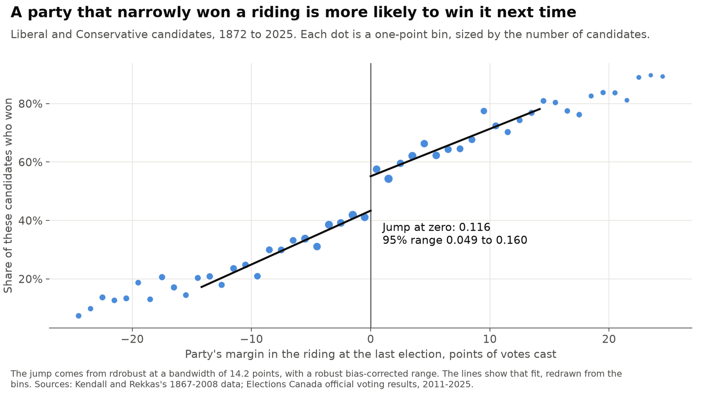
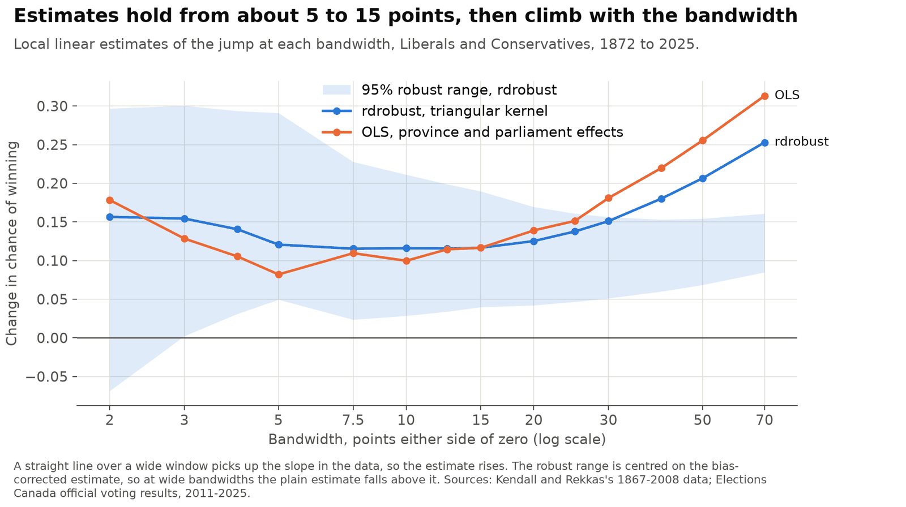
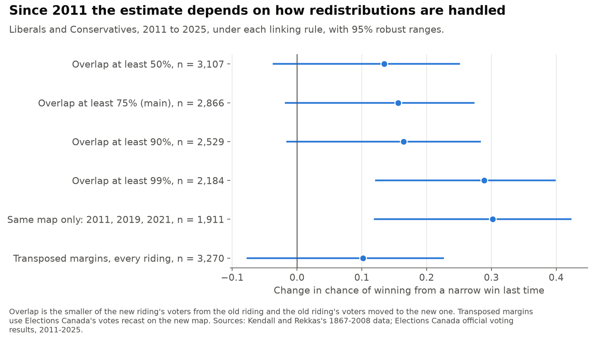
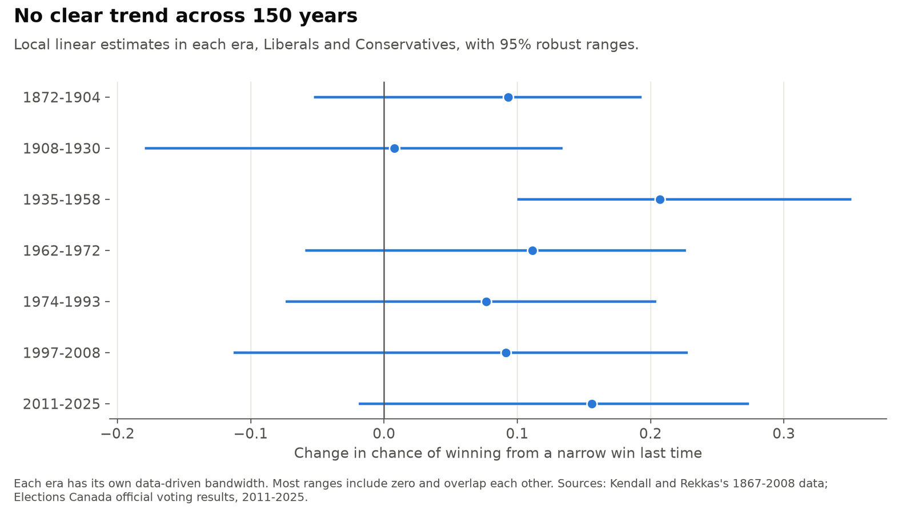
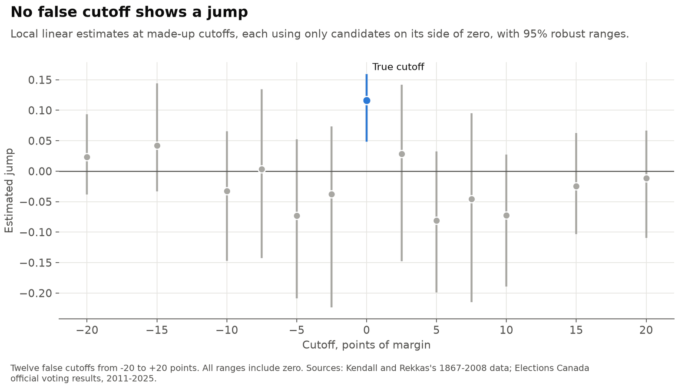

Does narrowly winning a federal riding help a party win it again?
Parties that win a riding (a federal electoral district) tend to win it again, but mostly because they were strong there already. Comparing candidates who just won with those who just lost separates the advantage of winning from that strength. In 2022 I replicated Kendall and Rekkas's study of this for a course at Simon Fraser University and wrote a critique of it. This project reruns that work in Python, applies current methods, tests the points the critique raised and adds the elections from 2011 to 2025.
Personal project: my own analysis of publicly available data. It is not associated with my work for any current or past employer and does not represent their views.
At a glance
| Question | Methods | Answer |
|---|---|---|
| Do the 2022 numbers reproduce? | The Stata regressions rewritten in Python, as a test | Yes: all 20 estimates, standard errors and sample sizes. |
| How large is the advantage? | Local linear regression discontinuity, data-driven bandwidth, robust range | A narrow win adds 11.6 points to the chance of winning next time (4.9 to 16.0). |
| Does it depend on the bandwidth? | The same estimate at 14 bandwidths | Little from 5 to 15 points, then it rises with the bandwidth. |
| Has it changed since 2008? | Riding links across two redistributions | Can't tell. It is 15.6 points since 2011 (−1.9 to 27.4), and it runs from 10 to 30 depending on the linking rule. |
| Does the margin's denominator matter? | Votes over eligible voters, 2006 to 2025 | Little: 14.2 points on votes cast and 12.7 on eligible voters. |
Ranges are 95%. A point here is a percentage point. The estimates describe close races only.
1. How large is the advantage?

A narrow win adds 11.6 points to a party's chance of winning the riding next time (95% range 4.9 to 16.0), for Liberal and Conservative candidates from 1872 to 2025. All 20 estimates in the 2022 table reproduce, with their standard errors and sample sizes.
| Sample | Estimate | 95% robust range | Bandwidth, points | Candidates |
|---|---|---|---|---|
| 1872-2008 | 0.113 | 0.042 to 0.160 | 15.2 | 13,653 |
| 1872-2025 | 0.116 | 0.049 to 0.160 | 14.2 | 16,519 |
| 1872-2025, province and parliament effects | 0.111 | 0.045 to 0.152 | 14.4 | 16,519 |
This covers the party's overall advantage. I did not repeat the paper's split between party and individual effects.
2. Does it depend on the bandwidth?
The critique asked whether the result depends on the two bandwidths the paper reports. It changes little between 5 and 15 points. Past 20 it climbs, because a straight line is being fitted through a curve, and the bias-corrected estimate stays near 0.11. The paper's cubic and quartic fits over ±70% are kept only for comparison, following Gelman and Imbens (2019).

3. Has it changed since 2008?
Federal ridings were redrawn before the 2015 and 2025 elections, so most new ridings have no exact predecessor. I linked ridings by their shared voters, using Elections Canada's transposition for 2013 and rebuilding the flows from 2021 polling divisions for 2023. At 75% overlap, 217 of 338 ridings link in 2015 and 283 of 343 in 2025. The rebuilt 2023 flows match Elections Canada's transposed elector counts with a correlation of 0.999.

The estimate since 2011 is 15.6 points (−1.9 to 27.4), and it runs from 10 to 30 depending on the linking rule. I can't say that the advantage has changed.

4. Other checks
Dividing the margin by eligible voters instead of votes cast, as the critique proposed, changes little: 12.7 points against 14.2 for 2006 to 2025. False cutoffs show no jumps, and a narrow win doesn't change whether a party runs again. Two checks are less clean: the density of Conservative margins before 1950, and narrow winners being somewhat less likely to have won two elections back. With about 35 tests, one or two below 5% are expected by chance, though I can't rule out real sorting in the early period.

Working with the source file also showed that 159 of its 308 winning margins for 2008 are measured against the third-place candidate. This doesn't affect the 2022 numbers, and I take all margins from 2008 on from Elections Canada's tables.
Data
Elections Canada official voting results, 2004 to 2025, transposition of votes, polling division boundaries and poll-by-poll results. The 1867-2008 file is from Kendall and Rekkas, "Incumbency advantages in the Canadian Parliament", Canadian Journal of Economics (2012), and isn't redistributed.
The results here are derived from copies of these sources and aren't official Elections Canada figures. Contains information licensed under the Open Government Licence - Canada.